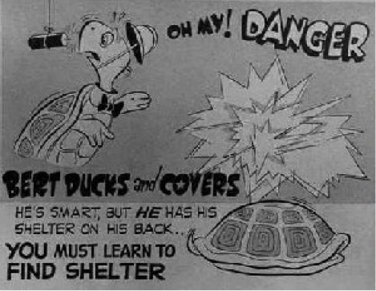

Cultural Uses of Animation
Overview
Animation, since its inception in the late 1650’s, has been used in various ways in popular culture, whether for political, social, or entertainment uses. While some have received critical acclaim for their contributions to the cinematography world, others have received critical attention due to their political nature or anti-viewpoint based plotlines.
Political Usage
There was a turtle by the name of Bert
And Bert the Turtle was very alert
When danger threatened him he never got hurt
He knew just what to do:He’d duck and cover,
Duck, duck, and cover!
He’d hide his head and tail and four little feet
He’d duck and cover!— Duck and Cover, 1952[1]
Duck and Cover was a 1951 civil defense film commissioned by the United States Federal Civil Defense Administration and produced by Archer Productions. Sometimes misinterpreted as propaganda, the main plot of the film shows an anthropomorphic turtle taking cover under his shell just before a monkey holding a bomb drops upon him. As the film switches back and forth between live footage and animated content, a narrator explains what children should do in the event of a nuclear explosion, suggesting that ducking under objects such as desks would prove to be safer than if they were standing or in the open.
As the film’s methods are generally useless for anyone who happened to be in the vicinity of an exploding atomic bomb, one of the film’s most common criticisms encountered is that the eventual radiation effects of a bomb would still kill those who ducked and covered,
regardless of any preemptive measures that were taken; on the Internet Archive’s comment page on Duck and Cover on October 24, 2009, user HollywoodBob wrote: We had
Even with its controversial nature, and quite possibly because of it, Duck and Cover was selected for the 2004 National Film Registry of Drop Drills
[…] I had studied a little about the atomic bomb and refused to drop. I told my teacher, if this were an atomic bomb attack, we’re all dead!
culturally, historically, and aesthetically significant
motion pictures.[2]